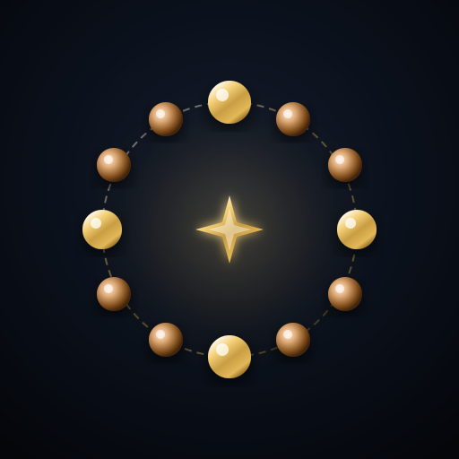

📲 묵주기도 웹앱 설치
홈 화면에 추가하여 앱처럼 편리하게 바치세요!
앱 설치하기
✕
✨
묵주 기도
마음을 모으고 정성으로 바치는 묵주 기도
알 개수 선택
5알
10알
33알
59알
99알
108알
직접 입력:
알
반복:
−
1회
+
묵주 선택
옥색
청색
우드
장미색
기도 시작하기
0
/ 59
1 / 1회차
아래로 쓸어내려 알을 넘기세요
손가락 두 개로 좌우 회전 / 핀치 줌을 해보세요
🔄 처음부터
🔔
🪷 묵주 변경
✨
기도 완료
설정한 모든 묵주 알을 정성껏 다 지송하셨습니다.
다시 시작하기